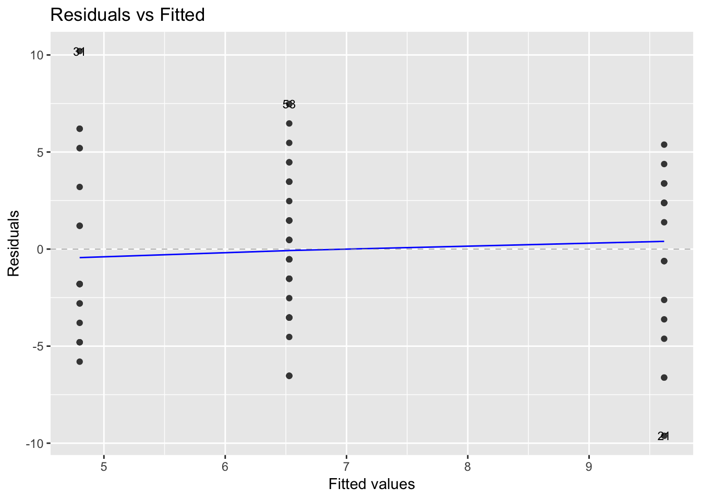

Chapter 2 Tests and inferences
library(knitr)
library(kableExtra)
library(tidyverse)## Warning: package 'tibble' was built under R version 3.5.2## Warning: package 'purrr' was built under R version 3.5.2## Warning: package 'dplyr' was built under R version 3.5.2## Warning: package 'stringr' was built under R version 3.5.2## Warning: package 'forcats' was built under R version 3.5.2One of the first thing to be familiar with while doing machine learning works is the basic of statistical inferences.
In this chapter, we go over some of these important concepts and the “R-ways” to do them.
2.1 Assumption of normality
Copied from here
Many of the statistical procedures including correlation, regression, t tests, and analysis of variance, namely parametric tests, are based on the assumption that the data follows a normal distribution or a Gaussian distribution (after Johann Karl Gauss, 1777–1855); that is, it is assumed that the populations from which the samples are taken are normally distributed. The assumption of normality is especially critical when constructing reference intervals for variables. Normality and other assumptions should be taken seriously, for when these assumptions do not hold, it is impossible to draw accurate and reliable conclusions about reality.
With large enough sample sizes (> 30 or 40), the violation of the normality assumption should not cause major problems; this implies that we can use parametric procedures even when the data are not normally distributed (8). If we have samples consisting of hundreds of observations, we can ignore the distribution of the data (3). According to the central limit theorem,
- if the sample data are approximately normal then the sampling distribution too will be normal;
- in large samples (> 30 or 40), the sampling distribution tends to be normal, regardless of the shape of the data
- means of random samples from any distribution will themselves have normal distribution.
Although true normality is considered to be a myth, we can look for normality visually by using normal plots or by significance tests, that is, comparing the sample distribution to a normal one. It is important to ascertain whether data show a serious deviation from normality.
2.1.1 Visual check of normality
Visual inspection of the distribution may be used for assessing normality, although this approach is usually unreliable and does not guarantee that the distribution is normal. However, when data are presented visually, readers of an article can judge the distribution assumption by themselves. The frequency distribution (histogram), stem-and-leaf plot, boxplot, P-P plot (probability-probability plot), and Q-Q plot (quantile-quantile plot) are used for checking normality visually. The frequency distribution that plots the observed values against their frequency, provides both a visual judgment about whether the distribution is bell shaped and insights about gaps in the data and outliers outlying values. A Q-Q plot is very similar to the P-P plot except that it plots the quantiles (values that split a data set into equal portions) of the data set instead of every individual score in the data. Moreover, the Q-Q plots are easier to interpret in case of large sample sizes. The boxplot shows the median as a horizontal line inside the box and the interquartile range (range between the 25 th to 75 th percentiles) as the length of the box. The whiskers (line extending from the top and bottom of the box) represent the minimum and maximum values when they are within 1.5 times the interquartile range from either end of the box. Scores greater than 1.5 times the interquartile range are out of the boxplot and are considered as outliers, and those greater than 3 times the interquartile range are extreme outliers. A boxplot that is symmetric with the median line at approximately the center of the box and with symmetric whiskers that are slightly longer than the subsections of the center box suggests that the data may have come from a normal distribution.
2.1.2 Normality tests
The various normality tests compare the scores in the sample to a normally distributed set of scores with the same mean and standard deviation; the null hypothesis is that “sample distribution is normal.” If the test is significant, the distribution is non-normal. For small sample sizes, normality tests have little power to reject the null hypothesis and therefore small samples most often pass normality tests. For large sample sizes, significant results would be derived even in the case of a small deviation from normality, although this small deviation will not affect the results of a parametric test. It has been reported that the K-S test has low power and it should not be seriously considered for testing normality (11). Moreover, it is not recommended when parameters are estimated from the data, regardless of sample size (12).
The Shapiro-Wilk test is based on the correlation between the data and the corresponding normal scores provides better power than the K-S test even after the Lilliefors correction. Power is the most frequent measure of the value of a test for normality. Some researchers recommend the Shapiro-Wilk test as the best choice for testing the normality of data.
2.2 T-tests
The independent t test is used to test if there is any statistically significant difference between two means. Use of an independent t test requires several assumptions to be satisfied.
- The variables are continuous and independent
- The variables are normally distributed
- The variances in each group are equal
When these assumptions are satisfied the results of the t test are valid. Otherwise they are invalid and you need to use a non-parametric test. When data is not normally distributed you can apply transformations to make it normally distributed.
Using the mtcars data set, we check if there are any difference in mile per gallon (mpg) for each of the automatic and manual group.
First things first, let’s check the data.
glimpse(mtcars)## Observations: 32
## Variables: 11
## $ mpg <dbl> 21.0, 21.0, 22.8, 21.4, 18.7, 18.1, 14.3, 24.4, 22.8, 19.2,…
## $ cyl <dbl> 6, 6, 4, 6, 8, 6, 8, 4, 4, 6, 6, 8, 8, 8, 8, 8, 8, 4, 4, 4,…
## $ disp <dbl> 160.0, 160.0, 108.0, 258.0, 360.0, 225.0, 360.0, 146.7, 140…
## $ hp <dbl> 110, 110, 93, 110, 175, 105, 245, 62, 95, 123, 123, 180, 18…
## $ drat <dbl> 3.90, 3.90, 3.85, 3.08, 3.15, 2.76, 3.21, 3.69, 3.92, 3.92,…
## $ wt <dbl> 2.620, 2.875, 2.320, 3.215, 3.440, 3.460, 3.570, 3.190, 3.1…
## $ qsec <dbl> 16.46, 17.02, 18.61, 19.44, 17.02, 20.22, 15.84, 20.00, 22.…
## $ vs <dbl> 0, 0, 1, 1, 0, 1, 0, 1, 1, 1, 1, 0, 0, 0, 0, 0, 0, 1, 1, 1,…
## $ am <dbl> 1, 1, 1, 0, 0, 0, 0, 0, 0, 0, 0, 0, 0, 0, 0, 0, 0, 1, 1, 1,…
## $ gear <dbl> 4, 4, 4, 3, 3, 3, 3, 4, 4, 4, 4, 3, 3, 3, 3, 3, 3, 4, 4, 4,…
## $ carb <dbl> 4, 4, 1, 1, 2, 1, 4, 2, 2, 4, 4, 3, 3, 3, 4, 4, 4, 1, 2, 1,…For this t-test, we focus on mpg and the kind of gearbox. Once done, let’s check how it looks like.
df <- mtcars
df$am <- factor(df$am, labels = c("automatic", "manual"))
df2 <- df %>% select(mpg, am)| mpg | am | |
|---|---|---|
| Mazda RX4 | 21.0 | manual |
| Mazda RX4 Wag | 21.0 | manual |
| Datsun 710 | 22.8 | manual |
| Hornet 4 Drive | 21.4 | automatic |
| Hornet Sportabout | 18.7 | automatic |
| Valiant | 18.1 | automatic |
Next step, we can generate descriptive statistic for each of the am group.
| am | mean | minimum | maximum | n |
|---|---|---|---|---|
| automatic | 17.15 | 10.4 | 24.4 | 19 |
| manual | 24.39 | 15.0 | 33.9 | 13 |
There is a difference between the mean of the automatic vs the manual cars. Now, is that difference significant?
Vizualising that difference by generating a boxplot for each group can help us better understand it.
ggplot(df2, aes(x = am, y = mpg)) +
geom_boxplot(fill = c("dodgerblue3", "goldenrod2")) +
labs(x = "Type of car", title = "Achieved milage for Automatic / Manual cars")Before we go on to our t-test, we must test the normality of the data.
To do so, we can use the Shapiro Wilk Normality Test
test_shapiro_df2 <- df2 %>% group_by(am) %>%
summarise(shaprio_test = shapiro.test(mpg)$p.value)| am | shaprio_test |
|---|---|
| automatic | 0.90 |
| manual | 0.54 |
There is no evidence of departure from normality.
To test the equal variance in each group, we use the levene.test for homogeneity of Variance (center = mean) from the car package.
test_levene_df2 <- car::leveneTest(mpg ~ am, center = mean, data = df2)| Df | F value | Pr(>F) | |
|---|---|---|---|
| group | 1 | 5.921 | 0.021 |
| 30 | NA | NA |
Because the variance in the 2 groups is not equal, we have to transform the data.
Apply a log transformation to stabilize the variance.
log_transformed_mpg = log(df2$mpg)Now we can finally apply the t test to our data.
t.test(log_transformed_mpg ~ df2$am, var.equal = TRUE)##
## Two Sample t-test
##
## data: log_transformed_mpg by df2$am
## t = -3.9087, df = 30, p-value = 0.0004905
## alternative hypothesis: true difference in means is not equal to 0
## 95 percent confidence interval:
## -0.5277597 -0.1655209
## sample estimates:
## mean in group automatic mean in group manual
## 2.816692 3.163332yo <- t.test(log_transformed_mpg ~ df2$am, var.equal = TRUE)
kable(broom::glance(yo), format = 'html') %>%
kable_styling()| estimate1 | estimate2 | statistic | p.value | parameter | conf.low | conf.high | method | alternative |
|---|---|---|---|---|---|---|---|---|
| 2.816692 | 3.163332 | -3.908659 | 0.0004905 | 30 | -0.5277597 | -0.1655209 | Two Sample t-test | two.sided |
Interpretation of the results.
- Manual cars have on average a higher mileage per Gallon (24 mpg) compared to Automatic (17 mpg).
- The box plot did not reveal the presence of outliers
- The Shapiro-Wilk normality test did not show any deviation from normality in the data
- The Levene Test showed difference in the variance in the 2 group. We addressed that by log transforming the data
- The t test show a significant difference in the mean of miles per gallon from automatic and manual cars.
2.3 ANOVA - Analyse of variance.
ANOVA is an extension of the t-test. While the t-test is checking for the difference between 2 means, ANOVA is checking for the difference in more than 2 means.
As with the t-test, we need to have our 3 assumptions to be verified.
- The variables are continuous and independent
- The variables are normally distributed
- The variances in each group are equal
We’ll do ANOVA on another Kaggle dataset called cereals . In this dataset, we’ll check if the place on the shelf (at the supermarket) of a cereal box is dependent of the amount of sugars in a cereal box.
df <- read_csv("dataset/cereal.csv")
df2 <- df %>% select(shelf, sugars) %>%
group_by(shelf) %>%
summarize(mean = mean(sugars),
sd = sd(sugars),
n = n()) %>%
ungroup()| shelf | mean | sd | n |
|---|---|---|---|
| 1 | 4.80 | 4.57 | 20 |
| 2 | 9.62 | 4.13 | 21 |
| 3 | 6.53 | 3.84 | 36 |
Clearly there is a difference. Let’s visualize that.
df$type <- factor(df$type, labels = c("cold", "hot"))
df$mfr <- factor(df$mfr, labels = c("American Home \n Food Products", "General Mills",
"Kelloggs", "Nabisco", "Post", "Quaker Oats",
"Ralston Purina"))
df$shelf <- factor(df$shelf)
ggplot(df, aes(x = shelf, y = sugars)) +
geom_boxplot() +
geom_jitter(aes(color = mfr)) +
labs(y = "Amount of sugars", x = "Shelf level",
title = "Amount of sugars based on the shelf level") +
theme(legend.position = "bottom")
We can see that shelf 2 tends to have cereals boxes that contains more sugars. Can we show this statistically?
We are in the situation to compare 3 different means and see if there is a difference between them.
- The Null Hypothesis: Mean of Sugar Shlef 1 = Mean of Sugar Shlef 2 = Mean of Sugar Shlef 3
- Alternative Hypothesis: There is a difference in between one of these means
model_aov_df <- aov(sugars ~ shelf, data = df)
summary(model_aov_df)## Df Sum Sq Mean Sq F value Pr(>F)
## shelf 2 248.4 124.20 7.335 0.00124 **
## Residuals 74 1253.1 16.93
## ---
## Signif. codes: 0 '***' 0.001 '**' 0.01 '*' 0.05 '.' 0.1 ' ' 1We get a high F-value on our test with a p-value of 0.001. Hence we can reject the null hypothesis and say that there is a difference between the mean of sugars in each of the shelf.
confint(model_aov_df)## 2.5 % 97.5 %
## (Intercept) 2.9665288 6.633471
## shelf2 2.2571819 7.380913
## shelf3 -0.5589625 4.014518All we could conclude is that there is a significant difference between one (or more) of the pairs. As the ANOVA is significant, further ‘post hoc’ tests have to be carried out to confirm where those differences are. The post hoc tests are mostly t-tests with an adjustment to account for the multiple testing. Tukey’s is the most commonly used post hoc test but check if your discipline uses something else.
TukeyHSD(model_aov_df)## Tukey multiple comparisons of means
## 95% family-wise confidence level
##
## Fit: aov(formula = sugars ~ shelf, data = df)
##
## $shelf
## diff lwr upr p adj
## 2-1 4.819048 1.743892 7.8942034 0.0010122
## 3-1 1.727778 -1.017129 4.4726846 0.2942373
## 3-2 -3.091270 -5.793836 -0.3887034 0.0210121The residuals versus fits plot can be used to check the homogeneity of variances. In the plot below, there is no evident relationships between residuals and fitted values (the mean of each groups), which is good. So, we can assume the homogeneity of variances.
library(ggfortify)
autoplot(model_aov_df, label.size = 3)[[1]]
Statistically, we would use the Levene's test to check the homogeneity of variance.
car::leveneTest(sugars ~ shelf, data = df)## Levene's Test for Homogeneity of Variance (center = median)
## Df F value Pr(>F)
## group 2 0.1335 0.8752
## 74From the output above we can see that the p-value is not less than the significance level of 0.05. This means that there is no evidence to suggest that the variance across groups is statistically significantly different. Therefore, we can assume the homogeneity of variances in the different treatment groups.
To check the normality assumption, we can use the Q-Q plot. Normality plot of residuals. In the plot below, the quantiles of the residuals are plotted against the quantiles of the normal distribution. A 45-degree reference line is also plotted. The normal probability plot of residuals is used to check the assumption that the residuals are normally distributed. It should approximately follow a straight line.
autoplot(model_aov_df, label.size = 3)[[2]]As all the points fall approximately along this reference line, we can assume normality.
The conclusion above, can be supported by the Shapiro-Wilk test on the ANOVA residuals.
shapiro.test(residuals(model_aov_df))##
## Shapiro-Wilk normality test
##
## data: residuals(model_aov_df)
## W = 0.98776, p-value = 0.6732Again the p-value indicate no violation from normality.
2.4 Covariance
The correlation coefficient between 2 variables can be calculated by \(r = \frac{Cov(x, y)}{\sigma{x} \cdot \sigma{y}}\)
The covariance is defined as \(\frac {\sum(x - \overline x) \cdot (y - \overline y)}{n-1}\) and the standard deviation is defined as \(\sqrt \frac{\sum(x - \overline x)^2}{n-1}\)